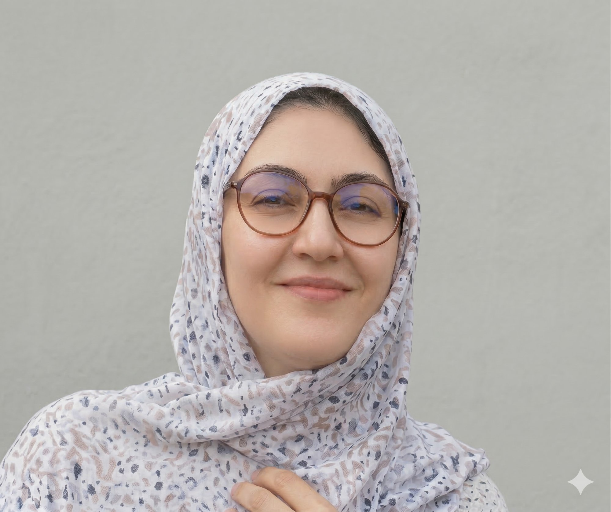

Every child deserves to experience joy — help us make it happen.
Rooted in the spirit of sadaqah, Sponsor Kids 212 channels the generosity of our community to bring essential support and heartfelt joy to orphaned, disabled, and impoverished children across Morocco.
We are a group of Moroccan friends living abroad who believe in giving back to the country and communities that shaped us.
We have identified children in Morocco who are orphaned, living with disabilities, have absent or disabled parents, or are in extreme poverty. We support them throughout the year with clothing, gifts, and essential items — starting with seasonal celebrations as an example of the joy we strive to bring them every chance we get.
Our long-term vision is to grow our support to cover school expenses, tutoring, medical care, field trips, food, and more. Each campaign is fully transparent: every dirham spent is documented with receipts.
The children have been identified. The person receiving funds in Morocco is trusted. Your donation goes exactly where it should.
Every child in our program has been individually identified by a trusted local coordinator in Morocco.
Privacy first. Children's identities are protected. Photos are only shared with explicit permission from the child and their guardian. No child will ever feel reduced to a charity case — they are seen, respected, and celebrated.
We began with seasonal giving and are growing year-round. Here's everything your donation can support:
$1 ≈ 10 Moroccan Dirhams (MAD). Every dollar is maximized at the source. Give what you can — no amount is too small.
Reach out to receive our Zelle, Venmo, or PayPal details — or give cash when we meet. Every donation is acknowledged and every purchase documented with a receipt.
Send your donation through any of these convenient methods. Contact us directly for account details.
Our coordinators are the heart of Sponsor Kids 212 — trusted individuals embedded in their communities who identify the children, purchase the items, and ensure every donation reaches the right hands.

Fatima Zahra is a wife, mother of a three-year-old girl, and a deeply compassionate community worker based in Casablanca. She works directly with vulnerable families and children, connecting them with the clothing, food, medical support, school resources, and disability assistance they need. Her hands-on presence and genuine care for those around her make her an invaluable bridge between our donors and the children we serve.
We are looking to expand to other cities across Morocco. If you know a trusted individual who shares our values and would like to volunteer as a local coordinator, please reach out.
We are committed to total accountability. Here is how every dollar is tracked from your hands to the children.
"Whoever relieves a believer's distress of the distressful aspects of this world, Allah will rescue him from a difficulty of the difficulties of the Hereafter."